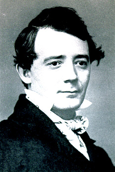

|  |
|
Septimus Winner was born in Philadelphia, PA on 11 May 1827, and died of a heart attack at the age of 75 there on 22 November 1902. His parents were Joseph Eastburn Winner (1802-1878) and Mary Ann Hawthorne. They had seven children: Septimus, Julia, Margaret Ann, Sarah Jane, Joseph Eastburn, Anna Ross, and Sivori. His father's brother's name was William E. Winner. On November 25, 1847, Septimus married Hannah Jane Guyer. They had two children: Margeret F[rancis?]. Winner, and James Gibson Winner (born 15 Feb 1852). He published lyrics and music, besides using his own name, under the pseudonymns of Alice Hawthorne, Percy Guyer, Mark Mason, Marion Florence, Leon Dore, Apsley Street, and Paul Stenton. Septimus also had a book of poetry edited and published by William C. Claghorn in 1903, posthumously, called Cogitations of a Crank at Three Score Years and Ten. His most popular songs were How Sweet Are the Roses (1850) [but not published until 1853], I Set My Heart Upon a Flower (1854), What Is Home Without a Mother (1854), Listen to the Mocking Bird (1855), Abraham's Daughter; or, Raw Recruits (1861), Der Deitcher's Dog (1864), Ellie Rhee; or, Carry Me Back to Tennessee (1865), What Care I? (1866), Whispering Hope (1868), Ten Little Indians (1868), Come Where the Woodbine Twineth (1870), and Love One Lost Is Gone Forever (1870). His was especially popular for his ballads published under the pseudonym of Alice Hawthorne. He had a brother who was also a composer, named (after his father) Joseph Eastburn Winner (1837-1918) who published under the alias Eastburn. Of special interest is the book The Mocking Bird: The Life and Diary of Its Author, Sep. Winner by Charles Eugene Claghorn (Philadelphia, PA: The Magee Press, [March] 1937), xii + 64 pages. *NOTE: all sources are from online digital archives or publications of the original sheetmusic which are in the Public Domain. Levy Collection material is identified in Box/Number format as a default "@" reference. Others are: 1) LoC for the Library of Congress' American Memories' website; 2) PS-xxx = material from Dover Publications' Popular Songs of Nineteenth Century America; Duke = material from Duke University; and, UNC = material from UNC-Chapel Hill Music Library. I have assumed and listed all of his music I've researched, as songs, unless I am sure otherwise. |
| Title | Words | Source* |
1851 | ||
| Let the Light of Days Depart (Song) [12 May] | Winner | 500090@LoC |
1852 | ||
| Rebecca at the Well (Sacred Ballad) [6 Dec] | Winner | 511890@LoC |
1853 | ||
| How Sweet Are the Roses | Winner | 126/037; 126/038 |
| My Cottage Home | Winner | 101/083; 1881-17967@LoC |
1854 | ||
| Come Gather 'Round the Hearth | Alice Hawthorne (pseud. for Winner) | 771380@LoC |
| I Set My Heart Upon a Flower | Winner | 127/100 |
| Mercy's Dream (Sabbath Ballads from Pilgrims Progress) |
Winner | 032/065 |
| The Chimes of the Monastery (adapted from Le Cloches du Monastere by Leopold Meignen) | Alice Hawthorne (pseud. for Septimus Winner) | 771392@LoC; conf0135@Duke |
| The Pet of the Cradle | Winner | 106/109; 106/110 |
| The Song of the Farmer | Winner | 771360@LoC |
| What Is Home Without a Mother) (for guitar) (Ballad) | Winner | 721090@LoC; 128/131; 128/132; 120/122 |
1855 | ||
| Dreams That Charm'ed Me When a Child (Ballad) | Winner | os76-33@Duke |
| Let Us Live With a Hope | Winner | 127/137 |
| Listen to the Mocking Bird [17 Apr. 1855] [Melody by Richard Milburn] |
Winner | 126/051; 126/055; 129/053 |
| My Early Fireside (Ballad) [7 Apr] | Winner | 590200@LoC |
| Our Good Old Friends | Winner | 126/081; 102/015 |
| The Golden Moon [12 Sep] | Winner | 590320@LoC |
| The Happiness of Home [12 Sep] | Winner | 751590@LoC; 590350@LoC |
1856 | ||
| Am I Not True to Thee [31 May] | Winner | 630300@LoC; 1884-14642@LoC (13 July 1884) |
| Fond Memories of My Childhood (Ballad) [31 May] | Winner | 630540@LoC |
1857 | ||
| As We Gathered in the Hay (Ballad) [22 July] | Septimus Winner | 631380@LoC; 1885-16737@LoC |
| Home and Friends; or, When the Sun Goes Down (Ballad) [23 Mar] | Winner | 631480@LoC |
| No One to Kiss (Comic Ballad) | Winner | 051/060 |
| Nothing to Wear (Comic Ballad) [8 Dec] | Winner | 051/061; 630770@LoC |
| The Flower Fadeth (melody from Gondolied (1855) by James Bellak) (Ballad) [29 Dec] | Winner | 630930@LoC |
| The Heart's Mission (Ballad) | Winner | 126/036 |
| The Summer of the Heart (Ballad) [7 Aug] | Winner | 610060@LoC |
| This Land of Ours (Ballad) [30 Dec] | Winner | 630890@LoC |
| "Widders Beware" Maidens Take Care! (Comic Song) | anonymous | 1885-14384@LoC |
1858 | ||
| Juana - Cuba Fair Isle! (Ballad) | Winner | 126/044 |
| The Red Petticoat (Comic Ballad) | Winner | 051/750 |
1859 | ||
| Jenny, Darling Jenny (Ballad) | Winner | 127/116 |
1860 | ||
| New Friends, True Friends (Ballad) | Winner | 131/052 |
1861 | ||
| The Snow-White Rose (Ballad No. 47) | Winner | os76-30@UNC-CH |
1862 | ||
| Away, Away! the Morn Is Brightly Breaking! (Pic Nic Glee) | Winner | 1000010005@HSM/LoC |
| As Dear to Day as Ever (Ballad No. 45) [using the alias Alice Hawthorne] | Winner | LL-SSM-ALD3633@Univ.ofInd. |
| Give Us Back Our Old Commander | Winner | 088/036 |
| Johnny Is Gone for a Soldier (No. 6 from SWEET MUSIC) | >Winner | civilwardigital.com |
| Maryland, My Maryland! (based on O Tannebaum; arr.) | adapted by Winner | 089/015, 089/017, 089/021, 086/015 |
| Rally for the Union (music: anon.; arr.) | C. M. Tremaine | 089/135 |
| Raw Recruits; or, Abraham's Daughter | Winner | 089/137 |
| There's Not a Sorrow On My Heart (music by William Withers, Jr.) | Septimus Winner | 135/101 |
| There Is No One Like a Mother | Winner | 131/129 |
1863 | ||
| Be My Mother Till I Die (melody by Elmer Ruan Coates; arr.) | Elmer Ruan Coates | 087/036 |
| Down Upon the Rappahannock (Ballad) | Winner | 087/124 |
| He's Gone to the Arms of Abraham (Comic War Ballad) [melody from "Secash," being a version of The Bonnie Blue Flag (1861) by Harry McCarthy] | Winner | b1065@Duke |
| Hoist Up the Flag (Patriotic Song) (melody by Billy Holmes) (arr.) | Billy Holmes | 088/075 |
| Pretty Sallie (melody by M.S.C; arr.) | Adapted by Winner | 131/084 |
| Yes I Would the War Were Over (answer to When This Cruel War Is Over [by Henry Tucker]) |
Winner | 090/173; 090/174 |
1864 | ||
| Der Deitcher's Dog (Comic Ballad) | Winner | 051/032 |
| Did You Think of Me Today (Ballad) | Winner | b1057@Duke |
| Kissing in Fun (music by F. [or T?] Harris) | Winner | 052/056 |
| Look With Thy Fond Eyes Upon Me (Ballad No. 63) | Winner | 131/024 |
| Our Flag O'er Georgia Floats Again [Song and Chorus] (No. 1 from Songs of the Times) | Winner | 1000010010@LoC/HSM |
| Our Nation Calls for Peace Again | Winner | 089/105 |
| Pretty to Me (Song and Chorus) [29 Oct] | Alice Hawthorne [alias for Septimus Winner] | 200182806@LoC/IHAS-CWM |
| That Lady in the Cars (Comic Song) (Arr.by Winner) | anon. | 059/089 |
| The Song of Jokes (Comic Ballad) | Winner | 053/063 |
| The World Is Topsy Turvy (Comic Ballad) | Winner | 053/100 |
1865 | ||
| Our Nation Mourns Her Martyr'd Son [music = Our Nation Calls for Peace Again (1864)] |
Winner | 005/057 |
| Carry Me Back to Tennessee; or, Ellie Rhee (arr.) | adapted by Winner | 087/071 |
| Farewell Song of Enoch Arden; or, I'll Sail the Seas Over | Winner | 066/043 |
| Twere Better That Words Were Unspoken (Ballad) | Winner | 131/142 |
1866 | ||
| Ellie Rhee for the Guitar (aka Carry Me Back to Tennessee (from The Amateur) [see 1865 original version, above] | Winner | 087/133 |
| I Am Dreaming of the Lov'd Ones (music--anon.; arr.) | anon. | 130/078 |
| What Care I, Who Cares for Me? | Winner | LoC; 135/115 [1879/1866] |
1868 | ||
| Captain Jinks, of the Horse Marines (Lyric Lyre)(arr. by Winner) |
T. Maclagen | 051/018 |
| Ten Little Injuns (Comic Song) | Winner | 106-107/203; 106-107/202 |
| The Lazaroni Maid | Winner | b0815@Duke |
| The Friends We Love (Song and Chorus) [4 Jul] | Alice Hawthorne [alias for Septimus Winner] | 200182805@LoC/IHAS-CWM |
| Whispering Hope (Duet) | Winner | PS-241 |
1869 | ||
| The Birdie's Ball (Ballad with Chorus) | Winner | 130/017a |
1870 | ||
| Little Wee Dog [compare Der Deitcher's Dog (1864)] | Winner and Barton Hill | 133/101 |
| No One to Weep When I Am Gone [3 Nov.] | Winner | 03385@LoC |
| Queer People There Be (Comic Song) | Winner | 03384@LoC |
| Where Mother Is, We Call It Home (Ballad with Chorus) | Winner | 9228@Univ.ofOregon |
1871 | ||
| After Sundown (from Home Joys) | Winner | LoC |
| Blow the Horn for Supper Kate (from Farm Ballads, No. 1) | Winner | 07979@LoC |
| Drifting From Home | Winner | LoC |
| God Bless the Little Feet | Winner | LoC |
| Never a Care I Know [19 Dec.] | Winner | 12422@LoC |
| On the Board-walk at Cape May (Comic Song) | Winner | 11330@LoC |
| Resurgam - I Will Rise Again | Winner | LoC |
| Take Me, Mother, in Thy Lap [18 Dec.] | Winner | 12011@LoC |
| That Little Church Around the Corner | anonymous | 135/065; 03229@LoC |
| The Coolie Chinee (Humorous Song) | Winner | 01951@LoC |
| There Are Friends That We Never Forget | Winner | 11630@LoC |
| We Met No More | Winner | LoC |
1872 | ||
| Only Friends and Nothing More [10 Dec.] | Winner | 13817@LoC |
| Une Penseée du Soir (An Evening Thought) (Reverie) | none | 100001588@LoC/HSM |
1873 | ||
| And Yet I Am Not Happy [18 Aug.] | Winner | 12106@LoC |
| Bury Not Thy Neighbour | Winner | [M2.3.U6A44] |
| Envy Not Thy Neighbor [22 Apr.] | Richard Arthur | 04291@LoC |
| Good Words [19 July] | Winner | 08530@LoC |
| I Don't Got Him Now [17 May] | Winner | 07912@LoC |
| Old Boston Bay [16 Dec.] | Winner | 15160@LoC |
| Patchwork (Medley [Ballad] Song) | Winner | 054/099 |
| Some Happier Day | Winner | LoC |
| Sour Kraut | Winner | 13005@LoC |
| The Bird and Mate [10 May] | Winner | 05230@LoC |
1874 | ||
| Dear Mollie Magee | Winner | 05833@LoC |
| Lover's Quarrel (Comic Dialogue Duet) | Winner | 10385@LoC |
| The Bow in the Cloud | Winner | LoC |
| The Gates Are Ever Open (companion to The Gates Ajar) | Winner | LoC |
| The Sister's Prayer (Temperance Ballad, with Chorus) | Winner | 099/015; 05307@LoC [21 May 1875] |
| Tom Collins Is My Name (Character Song) | Winner | 09822@LoC |
| Under the Eaves (Song and Chorus) | Winner | cahs0043@UC-B |
1875 | ||
| Home, By and By | Winner | LoC |
| If My Wishes Would Come True | Winner | 02845@LoC |
| Side by Side (Ballad) | Winner | 12472@LoC |
| The Spelling Bee (Humorous Song) | Winner | 054/135; 04574@LoC |
| The Weeping Family (Humorous Song) (from Vocal Music for the Piano or Organ) | Frank Verdant | 08138@LoC |
| Wherefore (Sentimental Ballad) | Winner | 08139@LoC |
1876 | ||
| Gay As a Lark | Winner | LoC |
| Let Us Cross Over the River (The last words of Stonewall Jackson) | Winner | 02492@LoC |
1877 | ||
| Ellen's Babies; or, I'm Kept on Pins and Needles (Humorous Ballad) [31 July] | Winner | 10860@LoC |
| Home Sweet Home (music by Sir Henry Rowley Bishop; arr.) | John Howard Payne, 1830 | LoC |
| Out of Work | Winner | LoC |
| The Meeting House Gate (Ballad) [4 Mar.] | Winner | 02978@LoC |
1878 | ||
| I'll Plant a Rose Beside Thy Grave (Decoration Song & Chorus) | Winner | 08895@LoC |
| I Would Not Die Away from Home (Vocal Duett) (Ballad) [18 Aug.] | Winner | 09800@LoC |
| The Maid and the Sparrow (Humorous Dialogue Duett) | Winner | 05179@LoC |
1880 | ||
| A Good Send-Off to Thee (Baritone Ballad) [28 Apr.] | Winner | 06840@LoC |
| The Creeds of the Bells (Solo, Duett & Quartett) [14 Apr.] | George W. Bungay | 06839@LoC |
1881 | ||
| God Save Our President (A Nation's Prayer) [20 July] | Winner | 10675@Levy |
1882 | ||
| Pass Us Not By (Song and Chorus) [23 Jan.] | George M. Vickers | 01276@LoC |
| The Soldiers Are Passing (from the melo-drama of Heloise) | Talvi | 14008@LoC |
| The Gypsy's Tent (from the melodrama Loriena) [12 Nov.] | Miss Cook | 19311@LoC |
1885 | ||
| Don't Blame Your Wife (Humorous Ballad) [7 July] | Winner | 15529@LoC |
| Thy Name I Love (Waltz Song) (from the opera Nanon, 1883, by Richard Genee) (arr.) [23 Mar.] | Richard Genee? | 06731@LoC |
Arrangements by Others | ||||
| Title | Arranged By | Words | Year | Source* |
| Grand Fantasia on the famous theme of "The Mocking Bird" | F. W. Meacham | none | 1905 | 171/112@Levy |
| Listen to the Mocking Bird With Brilliant Variations, Opus 550 (No. 19 from Hawthorne Leaves) | Charles Grobe | none | circa 1850s | 161/016 |
| Ten Little Niggers (Serio Comic Song) | Frank Green? | Frank Green | not dated | 017/141 |
| Title | Year | Source* |
| Aberdeen Schottisch | 1870 | LoC |
| America and Yankee Doodle [arr.] | 1876 | LoC |
| Anna Polka | 1874 | LoC |
| Archiduc Polka | 1875 | LoC |
| Aria Alla Schozzese (arr. for Violin and Piano) (from The Budget of Music) | 1870 | LoC |
| Baby's Dance (No. 2 from The Pet Set of Easy Airs for the Piano or Organ) [5 May] | 1880 | 07462@LoC |
| Ball and Pin Galop | 1874 | LoC |
| Ballad and Polka | 1874 | LoC |
| Ballad Set (Plain Cotillions No. 2) (arr.) | 1855 | 160/011 |
| Baxter March (arr. for Violin and Piano) (from Fifty Parlor Duetts) | 1885 | 20652@LoC |
| Beggar Student [opera, 1883, by Karl Millocker, 1842-1899] (arr. for Violin and Piano) (from Duets from the Opera) [11 Nov.] | 1883 | 23853@LoC |
| Big Bonanza Polka | 1875 | LoC |
| Black Diamond Cotillions [Quadrilles] (from Fashionable Round and Square Dances for the Piano Forte) [5 July] with figures for dancing...containing: Down in a Coal Mine Ten Thousand Miles Away Fisherman's Daughter Good Bye Charlie His Heart Was True to Poll |
5 July 1872 | 07660@LoC |
| Black Swan Set (Plain Cotillions No. 1) (arr.) contains: Few Days Keemo Kimo [by H. Wood] Wait for the Wagon Pop Goes the Weasel Jordan Am a Hard Road Hop De Do (Jig) |
1855 | 017/005 |
| Bud of Promise (A Spring Idylle) | 1874 | 08091@LoC |
| Bud of Promise, four hands | 1874 | LoC |
| Bud of Promise, simplified | 1874 | LoC |
| Caliostro Waltz | 1877 | LoC |
| Cecilian March | 1871 | LoC |
| Centennial Medley (arr.) (from American National Airs) contains: Star Spangled Banner Red, White and Blue Hail Columbia America Yankee Doodle |
1876 | 012/013 |
| Chesney-wold Quadrille | 1874 | LoC |
| Child's Own Set (Plain Cotillions No. 3) (arr.) --- contains: No.1 Here We Go Round the Mullberry Bush Sister Phoebe Little Bo Peep No. 2 London Bridge Tread Tread the Green Grass No. 3 When You Get Married You Must Obey No. 4 (Coquette Cotillion.) Oh When He Comes All Dress'd in Blue |
1855 | 104/016, 162/125 |
| Clear the Track Galop | 1874 | LoC |
| Colonel Ellsworth's Funeral March | 1861 | 091/052, 91/54 |
| Come Into the Garden, Maud (1857, music by Michael William Balfe; arr. for Cornet and Piano) | 1874 | 08084@LoC |
| Congress Schottisch | 1870 | LoC |
| Cuckoo Galop | 1874 | LoC |
| Dance on Forever Waltz | 1874 | LoC |
| Defile March | 1874 | LoC |
| Dixy's Land (music by John Cahr; arr.) (from New Set. Piano Music.) | 1860 | 091/078 |
| Dolly Varden (Medley Quadrilles) [Cotillions] (from Fashionable Round and Square Dances for the Piano Forte) with the figures for dancing, containing: Dolly Varden If Ever I Cease to Love After the Opera When the Band Begins Dear Little Shamrock |
12 Apr 1872 | 07659@LoC |
| Drama March | 1857 | 163/055 |
| Eagle Quadrilles | 1876 | LoC |
| Early Dawn (March) (No. 1 from Golden Thoughts of Favorite Authors) | 1878 | LoC |
| Eclipse Polka | 1874 | LoC |
| Falka [Comic Opera, 1884, by F. Chassaigne] (arr. for Violin and Piano) (from Duets from the Opera) [4 Apr.] | 1884 | 07547@LoC |
| Fatinitza Waltz | 1879 | LoC |
| Fille de Madame Angot, La - No. 1 (arr. for Violin and Piano) | 1874 | LoC |
| Fille de Madame Angot, La - No. 2 (arr. for Violin and Piano) | 1874 | LoC |
| Fille de Madame Angot, La - No. 3 (arr. for Violin and Piano) | 1874 | LoC |
| Fireside Schottisch (arr. for Violin and Piano) (from Fifty Parlor Duetts) | 1856 | 1885-20652@LoC |
| Florence Galop | 1874 | LoC |
| Fourth of July March | 1874 | LoC |
| French Polka | 1876 | LoC |
| Gen. Halleck's Grand March | 1862 | 091/106 |
| General Hancock's Grand March | 1864 | 091/108, 7/39 |
| Genevieve No. 1 (arr. for Violin and Piano) | 1873 | LoC |
| Gentle Spring Waltz | 1871 | LoC |
| Gentlemen's Bloomer Waltz | 1851 | 160410@LoC |
| Girofle Girofla No. 1 | Winner | LoC |
| Girofle Girofla No. 2 | Winner | LoC |
| Good Luck March | 1871 | LoC |
| Graffulla's Waltz (arr. for Violin and Piano) (from Fifty Parlor Duetts) | 1856 | 1885-20652@LoC |
| Hail Columbia (arr.) | 1876 | LoC |
| Juliet Waltzes | 1874 | LoC |
| Krieslaufen (arr. for Violin and Piano) | 1876 | 12059@LoC |
| Longing {by Jungmann; arr. for Violin and Piano) (from The New Set of First Class Duetts for the Violin and Piano) | 1874 | 12882@LoC |
| Love Letter Waltz (No. 12 from Diamond Set: Choice Duetts for the Cornet and Piano Arranged by Septimus Winner) | 1874 | 08088@LoC |
| Madame Angot Waltz | 1876 | LoC |
| Madame L'Archiduc No. 1 (arr. for Violin and Piano) | 1875 | LoC |
| Madame L'Archiduc No. 2 (arr. for Violin and Piano) | 1875 | LoC |
| Manuscript Waltzes | 1874 | LoC |
| Marion Schottische | 1875 | LoC |
| Maritana No. 1 (arr. for Violin and Piano) | 1873 | LoC |
| Medley Set (Plain and Fancy [No. 5] Cotillions) (arr.) contains: Wait for the Wagon Few Days & Kemo Kimo Villikins & Pop Goes the Weasel Jordan Coquette. Fancy Dance. |
1857 | 1885-04387@LoC |
| Nanon [opera, 1883, by Richard Genee] (Arr. for Violin and Piano) (from Solos, Duets and Trios) | 1885 | 10987@LoC |
| National Set (Plain Cotillions No. 4) (arr.) | 1855 | 001A/038 |
| Nellie Grant's Wedding March | 1874 | LoC |
| New Departive March | 1871 | LoC |
| Number One March | 1871 | LoC |
| Organ Pastime (arr.) (from Winner's Budget of Music for the Piano or Organ)) --contains: (1) Harvest Hymn (2) Echo Song by Beethoven (3) Chantique by Gounod (4) Twilight Thought by Mozart |
1875 | 10409@LoC |
| Orpheus No. 1 (arr. for Violin and Piano) | 1873 | LoC |
| Orpheus No. 2 (arr. for Violin and Piano) | 1873 | LoC |
| Pavilion Model Polka | 1875 | LoC |
| Pins and Needles Galop |
1877 | LoC |
| Plain Quadrille Palermo Set | 1877 | LoC |
| Practice and Pastime (chords and accompaniments) | 1872 | LoC |
| Race-Horse Galop (from Parlor Dances) [quotes Yes, I Would the War Is Over] |
1869 | 028/123 |
| Recherche Valse | 1877 | LoC |
| Robin Adair (Irish tune Eileen Aroon; arr. for Violin and Piano) (from The Budget of Music) | 1870 | LoC |
| Rochester Schottische (arr. for Violin and Piano) (from Fifty Parlor Duetts) | 1852 | 1885-20652@LoC |
| Rosalie Schottisch | 1857 | Eric W. Cook |
| Royal March | 1876 | LoC |
| Schoolday Waltz | 1874 | LoC |
| Silver Wedding March | 1870 | LoC |
| Soldiers Polka | 1874 | LoC |
| Song Medley (arr. for Cornet and Piano) (from Diamond Set Choice Duetts, for the Cornet and Piano) ---contains: Increase of Crime Starry Night for a Ramble |
1874 | 08069@LoC |
| Sophie Waltz | 1874 | LoC |
| Sounds from the Ringing Rocks (arr. for Violin and Piano) | 1874 | LoC |
| Star Spangled Banner (arr.) | 1876 | LoC |
| Sweet By and By (music by Joseph Philbrick Webster, 1819-1875; arr. for Violin and Piano) | 1878 | LoC |
| Thalberg Polka | 1874 | LoC |
| The Corliss Engine (March) | 1877 | LoC |
| Edwin Forest Quick-Step (aka The Edwin Forest Quick Step) | 1857 | 163/075 |
| The Hiawatha Polka [31 May] | 1856 | 331260@LoC |
| The Mocking Bird Cotillons (arr.) (from Mocking Bird Echoes) ---contains: (1) Hold Your Horses (2) Mocking Bird (3) Villikins and His Dinah (4) Lulu (5) Aunt Jemima's Plaster (Jig) |
1856 | 1884-06778@LoC [28 Mar] |
| The Rock Beside the Sea (music by Charles Crozat Converse; arr. for Violin and Piano) (from Fifty Parlor Duetts) | 1861 | 1885-20652@LoC |
| The Roses Waltz | 1874 | LoC |
| The Ruby Schottische | 1874 | LoC |
| The Shepherd Boy (music by G. D. Wilson; arr. for Violin and Piano) | 1877 | 02786@LoC |
| The Wyoming Waltz | 1854 | 1882-02550@LoC |
| The "Contraband" Schottisch | 1861 | 091/069, 091/070 |
| Tit-Tat-To (Schottische) [12 Sep] | 1855 | 1855-280910@LoC; 1855-751550@LoC; 104/138 & 139@Levy; 126/125@Levy; 1885-20652@LoC (arr. for Violin and Piano) |
| Varieties Quadrille | 1874 | LoC |
| Village Polka Quadrille | 1878 | LoC |
| Wait Till the Moonlight (arr. for Violin and Piano) | 1876 | LoC |
| Wedding March (Evening Hour) | Winner | LoC |
| Wedding Set (Plain Quadrille) (arr. for Violin, Cornet and Piano)(No. 43 from Solos, Duets and Trios) [Melody by Felix Mendelsohn] | none | 1885-02667@LoC |
| What Is Home Without a Mother (arr. for Violin and Piano) (from Fifty Parlor Duetts) | 1854 | 1885-20652@LoC |
| Wheat-sheaf Polka | 1876 | LoC |
| Wide Awake Set, Plain Cotillions. (from Home Joys for the Piano Forte or Parlor Organ. Second Set. No. 30) ---contains: New Champagne Charlie Little Maggie May Shabby Genteel Popsy Wopsy Roman Fall |
1871 | 10363@LoC |
| Wind Up Galop | 1874 | LoC |
| Winner's Banjo [quotes Dan Tucker] | 1858 | 162/042 |
| Would I Were With Thee (arr. for Violin and Piano) (from Fifty Parlor Duetts) | 1861 | 1885-20652@LoC |
| You Never Miss the Water (by Rollin Howard, 1872; arr. for Violin and Piano) | 1876 | LoC |